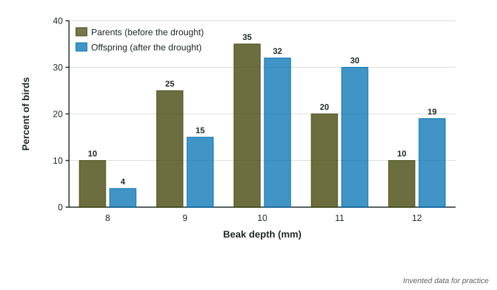

Adaptations
Populations respond to environmental change through natural selection.
Part 1 · Hook
Why this matters
Part 2 · Before you start
What this builds on
Part 3 · Prerequisite check
Quick check before you start
1. What is a population bottleneck?
- A sharp drop in population size that leaves little genetic variety
- A slow, steady rise in population size
- A barrier that keeps two species apart
- A food shortage that affects only one season
Show the answer
A bottleneck cuts the population to a few survivors, who carry only part of its genes.
- Correct: A sharp drop in population size that leaves little genetic variety:
- A slow, steady rise in population size:
- A barrier that keeps two species apart:
- A food shortage that affects only one season:
2. How is a drought that happens every few years at uneven gaps classified?
- Episodic
- Periodic
- Random
- Constant
Show the answer
Recurring at irregular intervals is episodic.
- Correct: Episodic:
- Periodic:
- Random:
- Constant:
Part 4 · See it
See it first

Part 5 · Step by step
How it works, step by step
- Individuals in a population differ in heritable traits, such as beak depthsome individuals are better suited than others to the current environment
- The environment changes, for example a drought leaves only hard seedsindividuals with suited traits (deep beaks) survive and reproduce more than others
- Survivors pass their heritable traits to their offspringthe suited trait becomes more common in the next generation
- This repeats over many generationsthe population becomes adapted to its environment; if change is too fast, it may die out instead
Part 6 · Key ideas
Key ideas
- Natural selection: individuals with heritable traits that suit their environment survive and reproduce more, so those traits become more common in the population over generations.
- An adaptation is a heritable trait that helps an organism survive and reproduce in its environment, such as a deep beak for cracking hard seeds or thick fur in a cold climate.
- Natural selection acts on populations over generations. An individual does not adapt during its life; the population shifts because some individuals leave more offspring.
- Populations need genetic variety to adapt. When the environment changes faster than a population can adapt, the population may decline or die out.
Part 7 · Misconception
A common mistake
The wrong idea: During the drought, each finch grew a deeper beak so it could crack hard seeds.
What actually happens: Beak depth is inherited and does not change because a bird needs it to. Finches that already had deeper beaks survived and bred more, so the next generation had deeper beaks on average.
Part 8 · Check yourself
Check yourself
Exam-style questions. Anything you miss goes into your review queue.
Model or diagram
Beak depth before and after a drought
1. According to the figure, which beak depth became more common among the offspring than among the parents?
- 12 mm
- 8 mm
- 9 mm
- 10 mm
Show the answer
Compare the two bars at each beak depth: the deep-beak bars grew.
- Correct: 12 mm: Right: 12 mm rose from 10% of parents to 19% of offspring.
- 8 mm: 8 mm fell from 10% to 4%.
- 9 mm: 9 mm fell from 25% to 15%.
- 10 mm: 10 mm fell slightly, from 35% to 32%.
2. Which explanation accounts for the shift shown in the figure?
- Each bird’s beak grew deeper during the drought as it cracked hard seeds
- Deep-beaked birds cracked hard seeds, survived and bred more
- Birds with deep beaks flew in from another island after the drought
- The drought caused new beak depths that the parents did not have
Show the answer
Natural selection changes how common existing traits are; it does not make individuals change.
- Each bird’s beak grew deeper during the drought as it cracked hard seeds: A beak’s inherited depth does not grow to meet a need; the population shifted through who bred.
- Correct: Deep-beaked birds cracked hard seeds, survived and bred more: Right: survivors with deeper beaks passed the trait to their chicks.
- Birds with deep beaks flew in from another island after the drought: Nothing in the figure shows birds arriving; the offspring came from the surviving parents.
- The drought caused new beak depths that the parents did not have: The offspring have the same five depths as the parents, in different shares.
3. What percent of the offspring had beaks 11 mm deep or deeper?
Type a number, then its unit (%). Scale words (2.5 million) and powers of ten (2.5 × 10^6) are read.
Show the answer
Add the two bars: of offspring, compared with of parents.
- Answer: 49 %
4. If the rains return and small, soft seeds become common again for many years, which change in the population is most likely?
- Each adult bird grows a smaller beak within one season
- The population keeps getting deeper beaks whatever seeds are present
- The share of birds with smaller beaks rises again over several generations
- Beak depth stops being passed on to offspring
Show the answer
Natural selection follows the environment: when conditions reverse, the favored trait can reverse too.
- Each adult bird grows a smaller beak within one season: Individual birds do not change their inherited beak depth.
- The population keeps getting deeper beaks whatever seeds are present: Selection depends on the environment, so it can reverse when the food changes.
- Correct: The share of birds with smaller beaks rises again over several generations: Right: if small beaks handle small seeds better, selection now favors them.
- Beak depth stops being passed on to offspring: Beak depth stays heritable whatever the weather.
Data
Moths on dark and light tree bark
| Year | Tree bark | Dark moths (% of catch) |
|---|---|---|
| 1850 | light, covered in pale lichen | 2 |
| 1900 | darkened by soot | 70 |
| 1950 | darkened by soot | 90 |
| 1970 | clean-air laws begin; soot falls | 85 |
| 2000 | light, lichen returning | 20 |
5. Write the setup for the percent change in the share of dark moths from 1950 to 2000, then give the answer, rounded to the nearest whole percent.
Type the setup as on the exam, with brackets and units, then the answer.
Show the answer
Start at 90 (1950): . The share of dark moths fell by about 78% as the bark grew light again.
- Setup: ; answer -78 %
6. Which statement best defines an adaptation?
- A change an animal makes in its body during its life to cope with a problem
- Any trait that an organism has, helpful or not
- An inherited trait that helps survival and reproduction
- A behavior learned from watching other species
Show the answer
Adaptations are heritable and helpful in the environment where the organism lives.
- A change an animal makes in its body during its life to cope with a problem: Changes within one life are not passed on, so they are not adaptations in this sense.
- Any trait that an organism has, helpful or not: An adaptation is a trait that helps in the organism’s environment.
- Correct: An inherited trait that helps survival and reproduction: Right: it is inherited and it raises survival or reproduction.
- A behavior learned from watching other species: Learned behaviors are not passed on in genes, so they are not adaptations in this sense.
Part 9 · Summary
Summary
Part 10 · Up next
What comes next
Part 11 · Connections